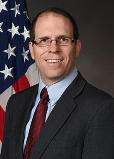

This website is meant to explain the basics of what a reference frame is in 2-D space and eventually it will cover representations of the following rotations in 3-D space:
- Euler Angles
- Yaw-Pitch-Roll
- Direction Cosine Matrix
- Axis-angle and Rodrigues Parameters
- Quaternions
Dr. Clark Taylor has provided research on these topics, and you'll find interactive examples within each paper to help you along the way.

Dr. Clark Taylor has been an Assistant Professor of Electrical and Computer Engineering at the Air Force Institute of Technology since 2018. He holds a Ph.D. in Electrical and Computer Engineering (Computer Engineering) from the University of California where he graduated in 2004. He formerly taught at Brigham Young University and held the position of Senior Research Electronics Engineer at the Air Force Research Laboratory from 2011 to 2018.